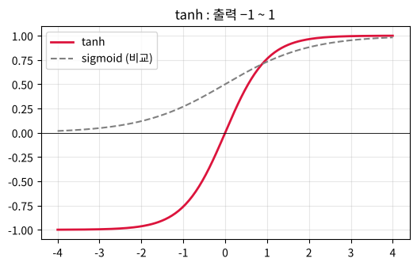

제 15 편
RNN - 순서를 기억하는 신경망#
근거 자료: 박성호, 「RNN (I) 개념 • 기본구조 • 동작원리」, 「RNN (II) 가중치 • 바이어스 • 동작원리(정량적 분석)」 (ML_LEC_35, 36)
학습 목표#
순서(sequence)가 있는 데이터의 특징과, 이를 처리하려면 과거 정보를 기억해야 하는 이유를 설명할 수 있다.
RNN 의 은닉층 상태 식 \(H_{t} = \tanh (X_{t} \cdot W_{ih} + H_{t-1} \cdot W_{hh} + b_{h})\) 을 계산할 수 있다.
간단한 RNN 을 학습시켜 “hello” 의 다음 글자를 예측하고, 기억(순환)이 꼭 필요함을 확인할 수 있다.
지난 시간 복습#
제 14편: CNN 은 사진의 공간(위치) 정보를 살렸습니다.
오늘은 문장·음성·주가처럼 순서(시간) 가 중요한 데이터를 다루는 RNN (Recurrent Neural Network, 순환 신경망) 입니다.
핵심 정리#
① 순환 신경망의 상태 식
\(H_{t} = \tanh ( X_{t} \cdot W_{ih} + H_{t-1} \cdot W_{hh} + b_{h} )\)
출력 \(= \mathrm{softmax}( H_{t} \cdot W_{ho} + b_{o} )\)
\(H_{t-1}\) 이 다시 들어가므로 \(H_{t}\) 에는 지금까지의 입력이 모두 녹아 있다.
\(\displaystyle \tanh (z) = \frac{e^{z} - e^{-z}}{e^{z} + e^{-z}}\) 은 −1 과 1 사이의 값을 낸다.
② 기억은 등비수열처럼 줄어든다
숫자 하나짜리 RNN 에서 입력이 \(t = 1\) 에만 1 이면 \(H_{1} = \tanh (1) \fallingdotseq 0.76\) 이고, 그다음부터는 \(H_{t+1} = \tanh (w \times H_{t})\) 이다.
\(H\) 가 작을 때 \(\tanh (z) \fallingdotseq z\) 이므로 \(H_{t+1} \fallingdotseq w \times H_{t}\) → 공비가 \(w\) 인 등비수열.
\(w = 0.5\) : 0.76, 0.36, 0.18, 0.09, … → 빠르게 잊는다
\(w = 0.9\) : 0.76, 0.60, 0.49, 0.41, … → 오래 기억한다
\(w = 0\) : 바로 잊는다
(아래 애니메이션 1) 긴 문장에서 앞의 기억이 흐려지는 이 문제를 줄이려고 LSTM, GRU 같은 구조가 나왔다.
③ softmax
\(\displaystyle p_{i} = \frac{e^{z_{i}}}{e^{z_{1}} + e^{z_{2}} + \cdots + e^{z_{k}}}\)
모든 \(p_{i}\) 는 양수이고 합은 1 이다. 글자 \(h, e, l, o\) 의 점수를 확률로 바꾸어 다음 글자를 고른다.
④ 기억이 꼭 필요한 예
“hell” 다음 글자 맞히기 : 세 번째와 네 번째 입력은 모두 ‘\(l\)’ 이지만 정답은 ‘\(l\)’ 과 ‘\(o\)’ 로 다르다. 입력만 보는 모델은 둘을 구별할 수 없고, 앞의 글자를 기억하는 RNN 만 “hello” 를 배울 수 있다. (아래 애니메이션 2)
코드로 직접 해 보려면 : 페이지 위쪽 로켓 버튼 → Colab 을 누르세요. 값을 바꿔 가며 실행하고, 연습 문제의 정답도 코랩에서 확인합니다. 처음 열면 파일 → Drive에 사본 저장 부터 하세요.
개념 다지기 1. 순서가 있는 데이터#
문장 |
뜻 |
google 의 품사 |
|---|---|---|
I work at google |
나는 구글에서 일한다 |
명사 |
\(I\) google at work |
나는 회사에서 구글링한다 |
동사 |
같은 단어라도 놓인 순서 에 따라 뜻이 달라집니다. 현재 단어의 뜻을 알려면 앞에 나온 단어들을 기억 하고 있어야 합니다.
[생각해 보기] 순서가 중요한 데이터의 예를 2가지 더 써 보세요. ( , )
개념 다지기 2. RNN 의 구조 - 은닉층이 자기 자신에게 돌아간다#
일반 신경망 : 입력 → [은닉층] → 출력
RNN : 입력 → [은닉층] → 출력
↺ (은닉층의 출력이 다음 시간에 다시 은닉층으로 들어감)
시간 순서로 펼쳐 그리면
I work at google
↓ ↓ ↓ ↓
[H₁] ──→ [H₂] ──→ [H₃] ──→ [H₄]
↓ ↓ ↓ ↓
출력 출력 출력 출력
\(H_{2}\) 는 ‘work’ 와 \(H_{1}\) (= ‘I’ 의 기억) 을 함께 보고 만들어진다.
\(H_{3}\) 는 ‘at’ 과 \(H_{2}\) (= ‘I work’ 의 기억) 을 함께 본다.
개념 다지기 3. RNN 의 계산 식#
\(H_{t} = \tanh ( X_{t} \cdot W_{ih} + H_{t-1} \cdot W_{hh} + b_{h} )\) (현재 상태, current state) 출력 \(= \mathrm{softmax}( H_{t} \cdot W_{ho} + b_{o} )\)
기호 |
뜻 |
|---|---|
\(X_{t}\) |
시간 \(t\) 의 입력 |
\(H_{t-1}\) |
바로 전 시간의 은닉층 상태 (기억) |
\(W_{ih}\) |
입력 → 은닉층 가중치 |
\(W_{hh}\) |
은닉층 → 은닉층 가중치 (기억을 얼마나 전달할지) |
\(\tanh\) |
활성화 함수 (출력 범위 −1 ~ 1) |
softmax |
출력들을 합이 1 인 확률 로 바꾸는 함수 |
💡 가중치 \(W_{ih}, W_{hh}, b_{h}\) 는 모든 시간에서 같은 값 을 씁니다.
[연습 1] 숫자 하나짜리 RNN 손으로 계산하기#
\(W_{ih} = 1, W_{hh} = 0.5, b_{h} = 0, H_{0} = 0\), 입력 \(X = (1, 0, 0)\) (처음에만 신호) \((\tanh (1) \fallingdotseq 0.76, \tanh (0.38) \fallingdotseq 0.36, \tanh (0.18) \fallingdotseq 0.18)\)
\(t\) |
\(X_{t}\) |
\(X_{t}\cdot 1 + H_{t-1}\cdot 0.5\) |
\(H_{t}\) |
|---|---|---|---|
1 |
1 |
\(1 + 0 = 1\) |
0.76 |
2 |
0 |
\(0 + 0.76 \times 0.5 =\) ( ) |
( ) |
3 |
0 |
0 + ( ) \(\times 0.5 =\) ( ) |
( ) |
입력은 처음에만 있었는데도 \(H_{2}, H_{3}\) 가 0 이 아니다! → 은닉층이 첫 입력을 기억 하고 있다. 만약 \(W_{hh} = 0\) 이면 \(H_{2} =\) ( ), \(H_{3} =\) ( ) → 기억이 ( 남는다 / 사라진다 )
W_hh = 0.5
t = 1 : 입력 1 → H = 0.7616
t = 2 : 입력 0 → H = 0.3634
t = 3 : 입력 0 → H = 0.1797
W_hh = 0.0
t = 1 : 입력 1 → H = 0.7616
t = 2 : 입력 0 → H = 0.0000
t = 3 : 입력 0 → H = 0.0000

애니메이션 1. 기억이 시간에 따라 전달되는 모습#
입력 신호는 \(t = 1\) 에만 들어갑니다. \(W_{hh}\) 값에 따라 은닉층의 기억\((H_{t})\)이 얼마나 오래 남는지 비교하세요.
[관찰 1] \(W_{hh} = 0\) 이면 기억이 ( 바로 사라진다 / 오래 남는다 ). \(W_{hh}\) 가 ( 클수록 / 작을수록 ) 기억이 오래 남는다. 💡 RNN 은 학습을 통해 무엇을 얼마나 기억할지 \((W_{hh})\) 를 스스로 정합니다.
실습. “hello” 를 배우는 RNN#
글자 4 종류 \(h, e, l, o\) 를 원-핫 인코딩 해서 넣고, 다음 글자를 맞히게 합니다.
시간 |
1 |
2 |
3 |
4 |
|---|---|---|---|---|
입력 |
\(h\) |
\(e\) |
\(l\) |
\(l\) |
정답 (다음 글자) |
\(e\) |
\(l\) |
\(l\) |
\(o\) |
[생각해 보기] 시간 3 과 4 의 입력은 똑같이 ‘\(l\)’ 인데 정답은 ‘\(l\)’ 과 ‘\(o\)’ 로 다릅니다. 입력만 보고 답하는 일반 신경망은 이 둘을 구별할 수 ( 있다 / 없다 ). 왜냐하면 ( )
학습은 제 2편의 수치미분 + 경사하강법 으로 합니다. 손실은 cross-entropy (정답 글자의 확률에 \(-\log\)).
[확인 1] 기억이 있는 RNN 의 예측은 ( ), 기억이 없는 모델의 예측은 ( ) 이다. 기억이 없는 모델은 세 번째와 네 번째 입력 ‘\(l\)’ 에 대해 ( 같은 / 다른 ) 답을 낼 수밖에 없다.
애니메이션 2. RNN 이 다음 글자를 맞혀 가는 학습 과정#
입력 \(h, e, l, l\) 각각에 대해 다음 글자 확률\((h, e, l, o)\)을 막대로 보여 줍니다. 초록 테두리가 정답입니다.
[관찰 2] 네 번째 칸(두 번째 ‘\(l'\))에서 ‘\(o\)’ 의 확률이 올라가기 시작하는 것은 대략 step ( ) 부터이다. 이때 RNN 은 “앞에 ‘\(l\)’ 이 이미 한 번 나왔다” 는 것을 ( ) 로 기억하고 있다.
개념 다지기 4. RNN 의 한계와 그 다음#
문장이 길어지면 앞쪽 기억이 점점 흐려집니다 (애니메이션 1 처럼 값이 줄어듦). → LSTM, GRU 처럼 기억을 더 잘 지키는 구조가 나왔습니다.
요즘의 ChatGPT, Claude 같은 대규모 언어 모델(LLM) 은 순환 대신 어텐션(attention) 으로 문장 전체를 한꺼번에 보는 트랜스포머 구조를 씁니다. 하지만 “앞 단어들을 보고 다음 단어를 확률로 예측 한다” 는 생각은 오늘 만든 hello RNN 과 같습니다!
연습 문제#
[문제 1] \(W_{ih} = 2, W_{hh} = 1, b_{h} = 0, H_{0} = 0\), 입력 (0.5, −0.5) 일 때 \(H_{1}, H_{2}\) 를 구하세요. \((\tanh (1) \fallingdotseq 0.76, \tanh (-0.24) \fallingdotseq -0.24)\) \(H_{1} = \tanh (2 \times 0.5 + 0) =\) ( ), \(H_{2} = \tanh (2 \times (-0.5) + 0.76 \times 1) = \tanh\)( ) ≒ ( )
정리#
핵심 |
내용 |
|---|---|
순서 데이터 |
문장, 음성, 주가 등 - 앞의 정보가 현재의 의미에 영향 |
RNN |
은닉층의 출력이 다음 시간의 은닉층으로 다시 들어가는 순환 구조 |
상태 식 |
\(H_{t} = \tanh (X_{t} \cdot W_{ih} + H_{t-1} \cdot W_{hh} + b_{h})\) |
기억 |
\(W_{hh}\) 가 과거 정보를 얼마나 전달할지 결정 (학습으로 정해짐) |
확인 |
기억이 없으면 “hell → ello” 를 배울 수 없다 |
마무리 도전 과제#
제 1편(미분)부터 제 15편(RNN)까지 배운 내용을 한 장의 마인드맵 으로 정리해 보세요. (미분 → 수치미분 → 행렬 → 손실함수 → 경사하강법 → 로지스틱 회귀 → XOR → 신경망 → 오차역전파 → CNN / RNN)